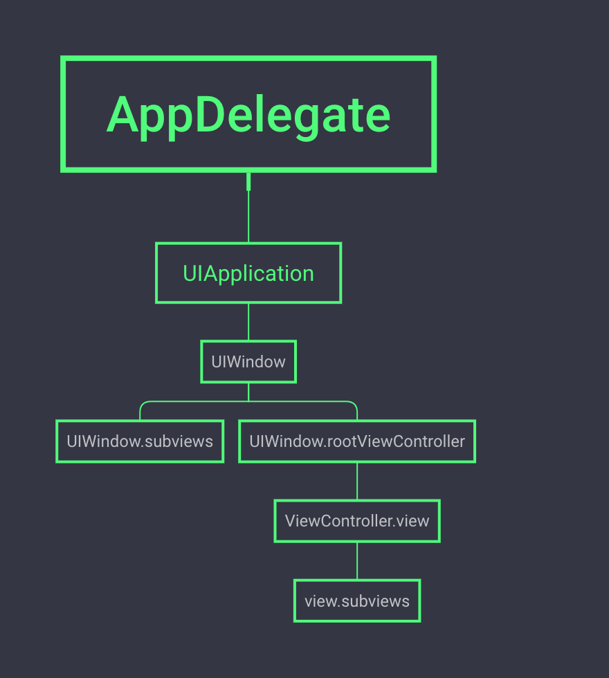
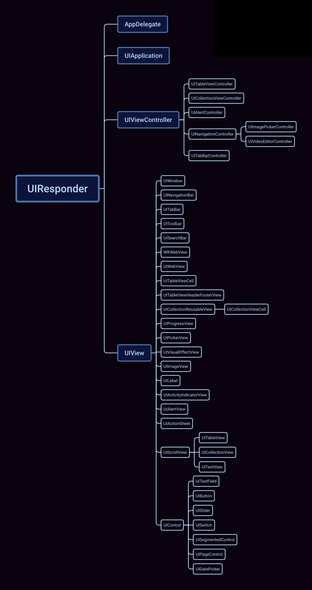
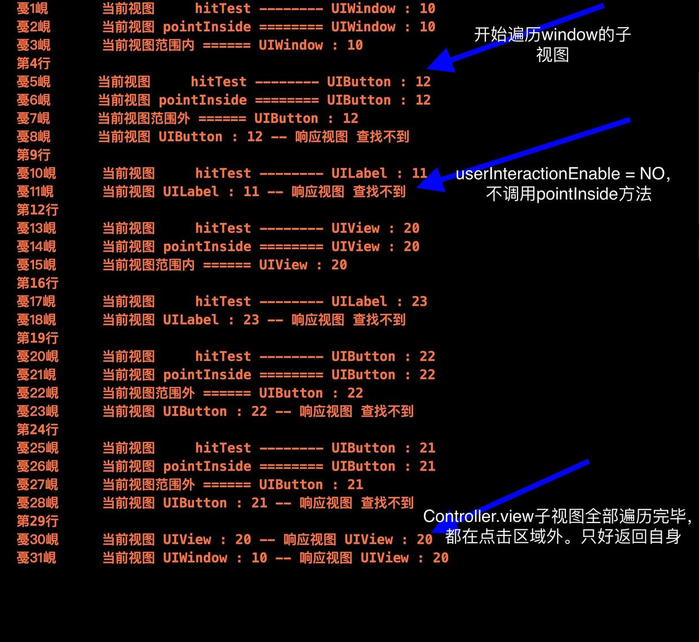
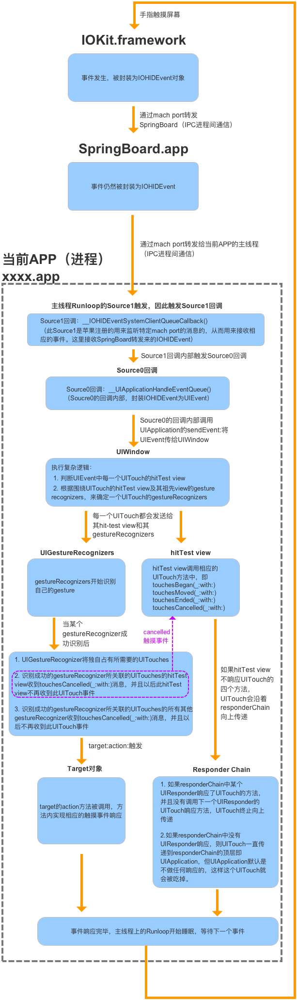

iOS响应链
当用户点击屏幕时：屏幕接收点击信号将点击位置转换成具体坐标，然后本次点击被包装成一个点击事件 UIEvent；最终会在某个视图响应本次事件进行处理，而为 UIEvent 查找响应视图的过程被称为响应链查找。
一个点击事件是如何从屏幕传递到处理视图？响应链又是什么呢？
1、响应者 UIResponder
响应者是响应链中的一个节点，是可以处理事件的具体对象，一个响应者应当是UIResponder 或其子类的实例对象。从API设计上来看，UIResponder 主要提供了三类接口：
- 向上查询响应者的接口
nextResponder； - 用户操作的处理接口，包括
touch、press和remote三类事件的处理； - 是否具备处理
action的能力，以及为其找到target的能力；
1.1、由nextResponder 指针构成的链表
每个UIResponder 都有nextResponder ，这些nextResponder指针指向下一个UIResponder，由此构成树状结构。打印 Demo 界面上所有控件的nextResponder：
当前responder AppDelegate ============ nextResponder (null)
当前responder UIApplication ============ nextResponder AppDelegate
当前responder UIWindow : 10 ============ nextResponder UIApplication
当前responder UIView : 20 ============ nextResponder ViewController
当前responder UILabel : 11 ============ nextResponder UIWindow : 10
当前responder UIButton : 12 ============ nextResponder UIWindow : 10
当前responder ViewController ============ nextResponder UIWindow : 10
当前responder UIButton : 21 ============ nextResponder UIView : 20
当前responder UIButton : 22 ============ nextResponder UIView : 20
当前responder UILabel : 23 ============ nextResponder UIView : 20
分析打印结果：
AppDelegate没有nextResponder；UIApplication的nextResponder是AppDelegate；UIWindow的nextResponder是UIApplication；window.rootViewController的nextResponder是UIWindow；UIViewController.view的nextResponder是UIViewController；- 子视图的
nextResponder是父视图；
这些UIResponder 由 nextResponder 指针构成一个树状结构，如下如所示：

1.2、响应链是否由 UIResponder构成？
由 nextResponder 组成的链表是不是响应链呢？
假如nextResponder 组成响应链，那么点击 lable 与 button 的重叠部分，应该是 lable.superView 响应事件。但实际却是 button 响应点击事件。
所以由 nextResponder 组成的链表并不是响应链的全部！
1.3、nextResponder 使用
利用 nextResponder ，可以获取 UIView 所在的 UIViewController：
- (UIViewController *)viewController{
UIResponder *nextVC = self.nextResponder;
while ([nextVC isKindOfClass:UIViewController.class] == NO)
nextVC = nextVC.nextResponder;
return [nextVC isKindOfClass:UIViewController.class] ? (UIViewController *)nextVC : nil;
}
2、视图 UIView

虽然 UIResponder 提供了处理响应事件的能力，但它无法被用户观察到；换句话说，用户无法点击这些有处理能力的对象。
UIView 继承 UIResponder，是展示在界面上的可视元素，包括不限于文本、按钮、图片等可见样式。既展示了界面元素，又具有与用户交互的能力：
- 视图树结构。虽然
UIResponder也存在相同的树状结构，但其必须依托于可视载体进行表达； - 可视化内容。通过
frame等属性决定UIView在屏幕上的可视范围，提供了点击坐标和响应可视对象的关联能力； - 内容布局重绘。视图渲染到屏幕上虽然很复杂，但不同的布局方式提供了不同阶段的重绘调起接口，使得子类具有很强的定制性
实际上，查找响应者就是查找点击坐标落点位置在其可视范围内且其具备处理事件能力的对象；也就是既要Responder 又要View 的对象。UIView 提供了两个重要的方法用于查找响应视图：
/* 获取响应视图
* 该方法内部可以分为三大步骤：
* @step1 判断视图是否可交互 userInteractionEnabled=NO,alpha < 0.01,hidden=YES
* @step2 判断视图是否在点击范围，调用 -pointInside:withEvent:
* @step3 倒序遍历所有子视图，子视图调用 -hitTest:withEvent:
*
* @note 上述任一步骤不通过，直接返回 nil ，不必向下执行
* @note 倒序查询优化查找速度，毕竟后添加的视图在上方易于被用户点击
*/
- (nullable UIView *)hitTest:(CGPoint)point withEvent:(nullable UIEvent *)event;
// 检测触摸点是否落在当前视图范围内
- (BOOL)pointInside:(CGPoint)point withEvent:(nullable UIEvent *)event;
2.1、-hitTest:withEvent:方法
通过方法交换exchang，打印一些关键信息：
- (BOOL)l_pointInside:(CGPoint)point withEvent:(UIEvent *)event{
NSLog(@"当前视图 pointInside ======== %@ : %ld",self.class,self.tag);
BOOL pointInside = [self l_pointInside:point withEvent:event];
if (pointInside) {
NSLog(@"当前视图范围内 ====== %@ : %ld ",self.class,self.tag);
}else{
NSLog(@"当前视图范围外 ====== %@ : %ld ",self.class,self.tag);
}
return pointInside;
}
- (UIView *)l_hitTest:(CGPoint)point withEvent:(UIEvent *)event{
NSLog(@"当前视图 hitTest -------- %@ : %ld",self.class,self.tag);
UIView *responserView = [self l_hitTest:point withEvent:event];
if (responserView) {
NSLog(@"当前视图 %@ : %ld -- 响应视图 %@ : %ld ",self.class,self.tag,responserView.class,(long)responserView.tag);
}else{
NSLog(@"当前视图 %@ : %ld -- 响应视图 查找不到",self.class,self.tag);
}
return responserView;
}
运行Demo，点击 ViewController.view 空白区域，观察上述方法的打印日志：

通过打印数据，分析 -hitTest:withEvent: 的内部实现：
- 1、首先判断
UIView能否与用户交互：userInteractionEnabled=NO、hidden=YES、alpha<0.01；如果不能与用户交互，那么-hitTest:withEvent:直接返回nil，不再查找其子视图。 （在打印数据第10行与第11行，-hitTest:withEvent:内部没有调用-pointInside: withEvent:） - 2、接着，如果
UIView能与用户交互，那么调用-pointInside:withEvent:判断点击点是否在其范围内。如果用户点击点不在视图范围内，返回nil，不再查找其子视图。 （打印数据第5行~第8行表明window子视图tag=12的button能与用户交互，但是它不在点击区域内，所以-hitTest:withEvent:返回nil，不再查找其子视图。） - 3、如果
-pointInside:withEvent:返回YES，说明在点击范围内，接着 倒序 遍历UIView的所有子视图。 采用倒序查询优化查找速度，毕竟后添加的视图在上方易于被用户点击 （打印数据第1行~第18行，因为window label 11、window button 12、ViewController.view.tag=20都是window的子视图，根据添加顺序看出子视图是倒序遍历。） - 4、倒序遍历
UIView对象的所有子视图：每个子视图调用-hitTest:withEvent:方法执行步骤 1~2，判断该子视图是否可交互且在点击范围内，如果该子视图不在，接着下一个子视图判断。 - 5、如果
UIView对象的所有子视图调用-hitTest:withEvent:都返回nil，那么UIView对象会返回自身。 （打印数据第30行，ViewController.view.tag=20遍历了它所有的子视图结果都是nil，于是返回它自身） - 6、如果所有子视图调用
-hitTest:withEvent:有一个子视图返回UIView，那么遍历将结束。返回的UIView就是对用户点击做出响应的view。 （打印数据第1行~第31行，window最终遍历到ViewController.view时，判断出ViewController.view.tag=20是响应视图，因此[window hitTest:withEvent:]最终返回ViewController.view） - 7、至此，程序已经找到了最终响应视图。
2.2、尝试重写 -hitTest:withEvent:
- (UIView *)hitTest:(CGPoint)point withEvent:(UIEvent *)event{
///第一步：判断视图是否可交互
if (self.userInteractionEnabled == NO || self.alpha < 0.01 || self.hidden == YES) {
return nil;
}
//第二步：判断视图是否在点击范围内
if ([self pointInside:point withEvent:event] == NO) {
return nil;
}
//第三步：倒序遍历所有子视图
__block UIView *resultView = self;
[self.subviews enumerateObjectsWithOptions:NSEnumerationReverse usingBlock:^(__kindof UIView * _Nonnull obj, NSUInteger idx, BOOL * _Nonnull stop) {
UIView *view = [obj hitTest:point withEvent:event];
if (view) {
resultView = view;
*stop = YES;
}
}];
return resultView;
}
2.3、-hitTest:withEvent: 方法使用
此方法可实现点击穿透、点击下层视图等功能：
eg1：一般来说，子视图在父视图之外区域的触摸操作不会被识别；重写父视图的 -pointInside:withEvent: 识别该视图返回 YES，则可以相应该操作;
eg2：扩大button 的点击区域;
3、事件处理
通过对-hitTest:withEvent:方法的分析，我们知道事件的传递过程。那么最终 UIView 能够处理该次点击事件嘛？
//UIResponder 提供了四个方法用于处理事件：
- (void)touchesBegan:(NSSet<UITouch *> *)touches withEvent:(nullable UIEvent *)event;
- (void)touchesMoved:(NSSet<UITouch *> *)touches withEvent:(nullable UIEvent *)event;
- (void)touchesEnded:(NSSet<UITouch *> *)touches withEvent:(nullable UIEvent *)event;
- (void)touchesCancelled:(NSSet<UITouch *> *)touches withEvent:(nullable UIEvent *)event;
如果需要最终视图处理事件，重写ViewController的上述方法：
- (void)touchesBegan: (NSSet<UITouch *> *)touches withEvent: (UIEvent *)event {
[super touchesBegan:touches withEvent:event];
NSLog(@"began --- %ld",(long)self.tag);
}
- (void)touchesEnded: (NSSet<UITouch *> *)touches withEvent: (UIEvent *)event {
NSLog(@"ended ---- %ld",(long)self.tag);
}
/* 点击空白区域的打印数据：
began --- 10
began --- 20
ended ---- 20
ended ---- 10
*/
ViewController 和 UIWindow 都处理事件了；注释//[super touchesBegan:touches withEvent:event]; 再次执行程序：
began --- 20
ended ---- 20
这次只有 ViewController处理事件。
-hitTest:withEvent: 返回的 UIView 对象是最可能处理事件的对象，但该对象并不一定处理事件。这时，需要逆着查找链找到能处理该事件的对象。
3、响应链
响应链可以分为事件的传递链、事件的响应链：
- 事件的传递链：由系统向离用户最近的view传递。
AppDelegate–>UIApplication–>UIWindow–> ……–> 合适的view - 事件的响应链：从找到
view开始，沿着nextResponder回溯！如果某个responder做出响应，并且没有调用下一个UIResponder的-touch，则响应链到此结束！如果所有的responder不做响应，则一直传递到顶层UIApplication，UIApplication默认不做响应，事件被丢弃！
事件处理完毕后，主线程的 Runloop 开始休眠，等待下一个事件！
引用iOS触摸事件的流动的一张流程图：

参考文章